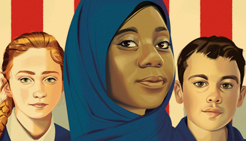

At any time, but especially in this pandemic homeschooling era, we can default to grabbing whatever information and resources are easiest/quickest to access. However, easy and quick is not always synonymous with diverse, well-considered, and high-quality. These are free resources for educators and parents to use to engage and meet the needs of a broad spectrum of learners.
Browse the resources below, or filter them via the dropdown menu.
I'm Looking For:
-

Culturally Responsive Teaching
Edutopia
Edutopia contains resources for how to teach K-12 students and how to implement teaching practices in the classroom. Their Culturally Responsive Teaching section contains many resources in the form of blog posts and short videos which contain insight from teachers and students along with tips. The blog entries are created by other educators and are easy to browse. The website has other topics such as teacher learning, social and emotional learning, and assessment. Edutopia is simple to use and search for information. This is a strong resource for parents and teachers who want to learn more about incorporating culturally responsive teaching into their curriculum.
-

The National Association for Multicultural Education
(NAME)
NAME is a national and international non-profit organization featuring an abundance of free resources that are beneficial to all educators, including Teacher Spotlight Case Studies, NAME Job Bank, and NAME Learn. They are currently developing a resource bank showcasing what multicultural educators do in the classroom. The Job Bank provides a list of open positions in social justice education, equity, and multicultural education. NAME's Learn section includes resources and activities for teachers who are in search of professional development surrounding multicultural education the role it plays in the classroom and how teachers can use it.”
-

Teaching Tolerance
Southern Poverty Law Center (SPLC)
A project of the Southern Poverty Law Center Project, this site offers both common core-aligned lesson plans to help K-12 youth actively take part in a diverse world and professional development resources for teachers to bring anti-bias education into the classroom. Race, sexual and gender identity, ability, religion, and more are covered in modes including text, video, and podcasts. These can be filtered by grade level, subject, and topic. Lesson plans include topics such as activism and legislation, famous African-American figures, and civil rights movements. Information about educator grants and customized learning plans are also available (the latter requires creating a free account). Additional videos are located on their Youtube channel.
-
EdJustice
National Education Association (NEA)
EdJustice has resources on racial, social, and economic justice for public education. Their resources page contains news articles, links to posts, and resource guides. One of their notable guides is Racial Justice in Education: Resource Guide. This eighty-page PDF contains information on why racial justice matters, how to talk about it, and a list of tools. This document has a table of contents and contains a hyperlink list of resources for further reading. This resource is helpful for teachers and parents who want to implement racial justice into their lesson plans.
-

Strategies for Culturally Responsive Teaching
EdWeb
EdWeb is a professional learning network and community that is free to join. Non-members can browse their Professional Learning section that contains guides, research, and articles on professional development and other K-12 topics. The website also has many webinars which non-members can watch these after entering a valid email address and country of origin. One such webinar is 'Strategies for Culturally Responsive Teaching' - the panel contains former educators from Texas and Georgia. This webinar has in-depth information on identifying biases, creating a sense of belonging, and teacher competencies making it valuable for teachers who are looking for professional development learning and for parents who want information on culturally responsive teaching.
-

Facing History
Facing History and Ourselves
Facing History and Ourselves is an extensive starting point for beginning classroom conversations about social justice. They provide classroom strategies for bringing an equity viewpoint to historical and current events, challenging both students and educators to be engaged agents of change. Resources for educators are searchable as well as filterable by topic, subject, and resource type. Full books, webinars, and audio/visual materials are offered alongside thorough discussion guides on topics such as race in U.S. history, religious intolerance and democracy, and civic engagement. Access to some content, such as webinars, requires creating a free account. Relevant professional development events, courses, and webinars are also freely available, with some longer seminars which are paid.
-

Global Oneness Project
Global Oneness Project LLC
The Global Oneness Project investigates global topics such as migration, climate change, and indigenous cultures via localized human experiences and stories. With content that ranges from films and photo essays to lesson plans and study guides which can all be filtered by media type, subject, and national standards, this site is a valuable resource to any classroom. Much of the content is available in Spanish alongside English – look for this filter option under “Media Type.” Navigation is accomplished most easily via links at the bottom of every page to resource categories. Some items, such as study guides must be downloaded (for free) after filling out a brief form.
-

Critical Media Project
(CMP)
Critical Media Project is a resource for students ages 8-21 and educators which promotes media literacy via explorations into identity. With videos, DIY activities, and more, this common core aligned resource is designed to be interactive and ultimately promote engaged civic participation. Media is an ever-present force informing young people and the way they relate to others. CMP gives students tools to view media critically and see the agency they have to enact change. Read about the importance of media literacy, explore identity subheadings from the main page, and create curated playlists of videos and discussion questions.
-

Inclusive Schools Network
(Inclusive Schools Network)
Inclusive Schools Network promotes inclusive educational practices. Their resources page has many topics that can be applied to any grade level, such as culturally responsive teaching, inclusion basics, and instruction for diverse learners. Each resource page contains a paragraph about what the topic is followed by a list of blog entries. The entries contain helpful advice, downloadable content, and lists. Each entry is brief, making it easy to browse. The website is simple to use with the menu bar always present and an easy to use search bar. This is a great resource for teachers and parents to find information on culturally responsive teaching and other important topics for their students.
-
Cultivating Diversity, Equity, and Inclusion in Education Environments
Resilient Educator
Resilient Educator's resources cover classroom management, instructional design, trauma and resilience and more, all of which are created and curated by practitioners and experts in the field. The COVID-19 Toolkit provides helpful strategies to use right now for teachers and students. One page, 'Cultivating Diversity, Equity, and Inclusion in Education Environments,' provides activities and articles to help educators create an inclusive classroom. 'Current Events' allows teachers to explore educational topics of interest in the U.S. 'Curated Resources for Teachers' includes information about STEAM, trauma-informed practices, social and emotional development and more. Professional development resources are also available, including information on teaching degrees, licensure and certification by state and relevant conferences. Many of these focus on the Southeastern U.S.
-

Cult of Pedagogy
Jennifer Gonzalez
Cult of Pedagogy is a blog posts on a variety of subjects, including cultural competence, differentiation, English learners, history/social studies, LGBTQ+, restorative justice, social justice, social-emotional learning, whole child, and many more. One post, “Improving the Way We Teach About Slavery,” provides information from the SPLC on teaching American slavery for history teachers. Another post, “Culturally Responsive Teaching: 4 Misconceptions,” features an interview with Zaretta Hammond, author of Culturally Responsive Teaching & the Brain. Cult of Pedagogy also provides podcasts for many of the same topics as well as a library of free videos that link to YouTube. Additional classroom materials and courses can be purchased through the store.
-
International Developmental Research Association
(IDRA)
IDRA is a non-profit organization with a focus on equity, based in San Antonio, Texas. Their website can be translated into approximately 109 different languages. Currently, they offer "The Learning Goes On" – A COVID-19 resource including webinars, weekly updates in Spanish and English, and equitable practices for online learning. Equity Connection is IDRA’s online community where educators, researchers, parents, and community members can come together in special interest groups (including Mexican American Studies, Equity Central, Teachers of English Learners and Education CAFE). IDRA's Valued Youth Partnership is a tutoring and drop-out prevention program for junior high and high school students. They also provides a navigable Resource Center. This wealth of information also extends to the regional IDRA EAC-South.